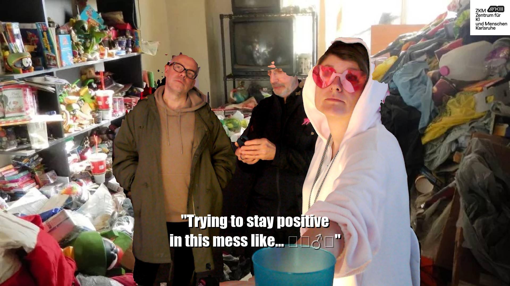
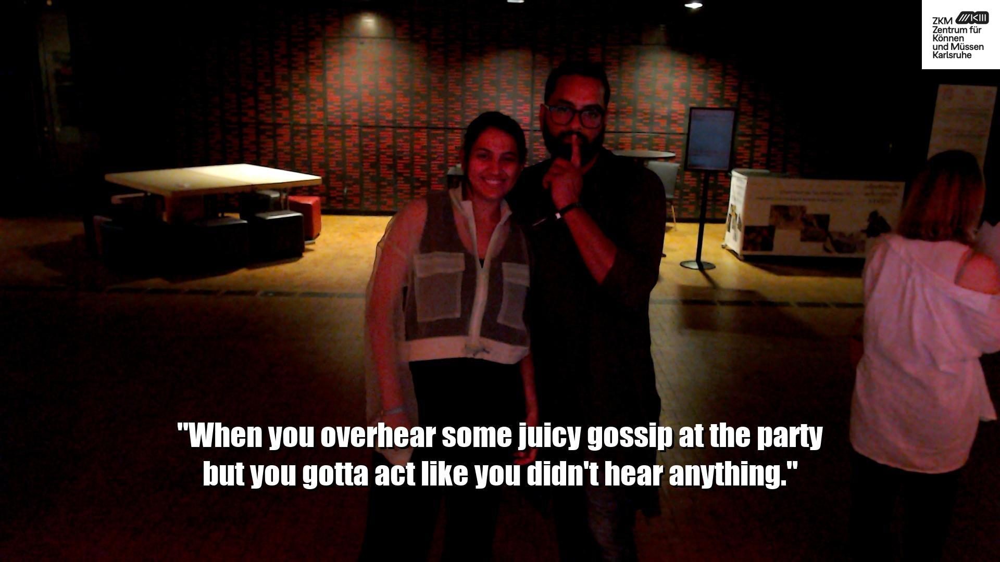

ZKM, Kamuna, 2024
Meme Me is a playful yet critical installation that blurs the line between automated image recognition and internet culture. The work explores how artificial intelligence interprets visual content and repackages it into the internet’s most potent form of commentary: memes. Meme Me takes this mundane visual material and feeds it through a chain of AI perception and language generation, ultimately producing a meme that is both absurd and unsettlingly accurate.
The process is deceptively simple:
Each step combines machine vision, natural language generation, and code to co‑create memes with both humor and unsettling accuracy. People can download or request to delete their images here.

